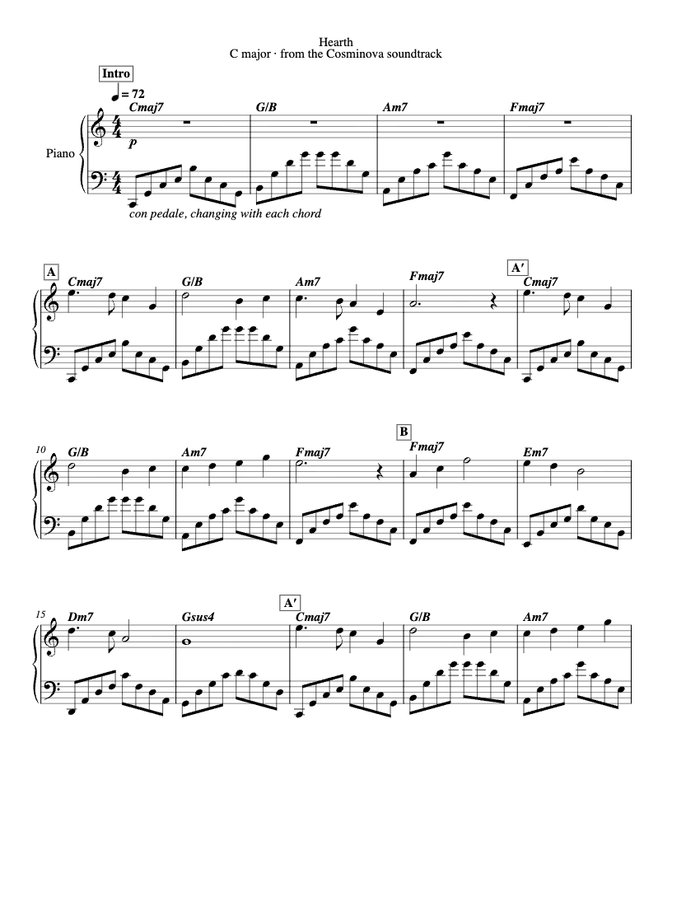

About
Grant Su
I made Cosminova: a universe at true scale that runs in a browser, from a few metres above a crater floor out to the superclusters.
Astronomy, and why this exists
Most of what I care about is up. I have spent a lot of time behind telescopes — learning where to point, waiting for my eyes to adjust, finding a planet and then trying to hold still long enough to see its moons. The strange thing about observing is how much it hides. Everything you find arrives as a point or a smudge, all at the same apparent distance, and the numbers that describe it are too big to mean anything on their own.
Cosminova is my attempt to close that gap. I wanted to stand under the real sky and then keep going: lift off, watch Earth shrink to a dot, cross the empty kilometres to the planets and the light-years to the next star, without the program ever cheating the distances to keep things on screen. Building it taught me more astronomy than anything I had read, because every time something looked wrong, the fix was a piece of physics I had only memorised before — how light scatters through an atmosphere, how a star's colour follows its temperature, how gravity bends the image of a black hole's disc.
The project at a glance
- Name
- Grant Su
- Role
- Creator — concept, design direction, testing and release
- Dates
- 26 August 2026 – present. First public build 5 September 2026.
- Languages
- JavaScript, GLSL shaders, HTML and CSS, Swift (the macOS and iOS shells)
- Tools
- Three.js and WebGL2, Vite, Node.js, Electron (Windows build), Xcode, Puppeteer with headless Chrome for automated tests, Git and GitHub Actions, and Cursor with AI coding agents
- What I designed
-
- The concept and its one hard rule: a single continuous scene at true scale, with no loading screens or compressed distances.
- What you can do in it — orbit, fly, roam freely, stand on surfaces, ride spacecraft, wind time, and click any point of light to go there.
- The look: realistic rather than stylised, which meant deciding over and over what a black hole, a sunset on Mars, or a galaxy seen from inside should look like and judging the result against photographs.
- The testing. I flew the app, found what was wrong — shaking orbits, black moons, a duplicate Betelgeuse, labels cluttering open space — and decided what "fixed" had to mean. The automated screenshot checks write those judgements down.
- The website, this journal, and the soundtrack's direction.
- Outside libraries
- Three.js (rendering), Vite (build), Electron (desktop), Puppeteer and sharp (tests and screenshots), Verovio (engraving the sheet music below)
- Outside data
-
- ESA Gaia DR3 (1,165,298 stars) and the HYG database (Hipparcos, Yale, Gliese)
- NASA Exoplanet Archive for real planetary systems
- JPL planetary elements and JPL Horizons spacecraft trajectories
- Solar System Scope body imagery (CC-BY 4.0), from NASA data
- NASA SVS CGI Moon Kit, from Lunar Orbiter Laser Altimeter elevation
- Cosmicflows-3, RC3 and HyperLEDA for galaxies
- d3-celestial (Olaf Frohn) for constellations; Milky Way panorama by Serge Brunier (ESO)
- Lunar theory from Meeus, Astronomical Algorithms
Sheet music
The soundtrack is eight sparse ambient piano miniatures, separated by long periods of silence. Each is a plain melody over a broken-chord left hand held in the pedal, mostly in major keys and modes with added sevenths and ninths, and each lasts under two minutes. The app synthesises them live from notes stored in its code, so these scores are engraved from exactly the notes it plays.
Listen
Where you are changes how the music is played. These are rendered from the app's own synthesiser, a minute of each.
-
Near Earth — Hearth. A dry piano at walking pace, in a small room.
-
Deep space — Drift. Slower and further away, a sustained chord underneath, a long hall.
-
On an alien world — Glass Garden. Lydian, with a celesta doubling the tune from the second section.
Scores
Each score has chord symbols, form marks and the tempo it is played at near Earth; out in space the app slows it slightly, which is not notated.

All eight in one book (PDF, 12 pages) — or each on its own, as a PDF to print or MusicXML to open in MuseScore, Finale or Sibelius:
- Hearth · MusicXMLC major · 72 bpm · 4/4
- Lantern Moss · MusicXMLG major · 66 bpm · 3/4
- Small Hours · MusicXMLF major · 60 bpm · 4/4
- Drift · MusicXMLD major · 58 bpm · 4/4
- Far Shore · MusicXMLE♭ major · 64 bpm · 4/4
- Glass Garden · MusicXMLA Lydian · 62 bpm · 4/4
- Under Dark Water · MusicXMLA minor · 54 bpm · 4/4
- Pale Blue · MusicXMLB♭ major · 70 bpm · 4/4
Get in touch
Questions, bugs and ideas: su.grant.x@gmail.com.